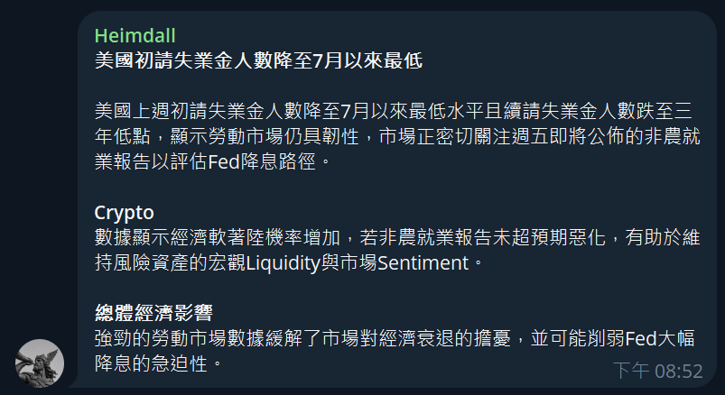
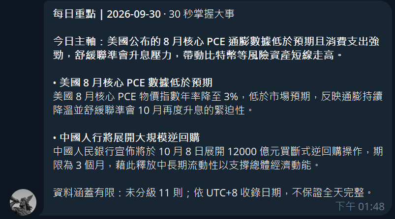
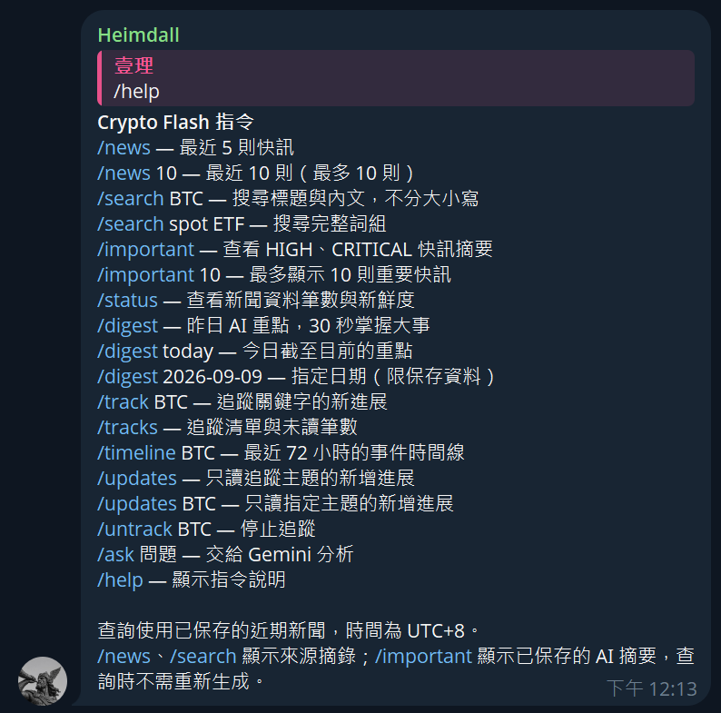
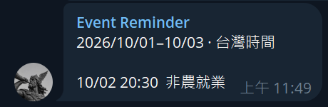

01 · Minutes
Read the repository
Crypto Flash
Why I built itI was tired of reading every market alert just to find the few that could change risk. Speed without context is still noise. I built Crypto Flash to filter the feed, explain why an event matters to crypto, and keep recent context searchable inside Telegram.
What it became: live alerts, daily digests, search, topic tracking, timelines, and Gemini Q&A.
Current evidence: operated for about two months in a 10-member group; feedback remains founder-led.
Current evidence: operated for about two months in a 10-member group; feedback remains founder-led.
Real Telegram output



